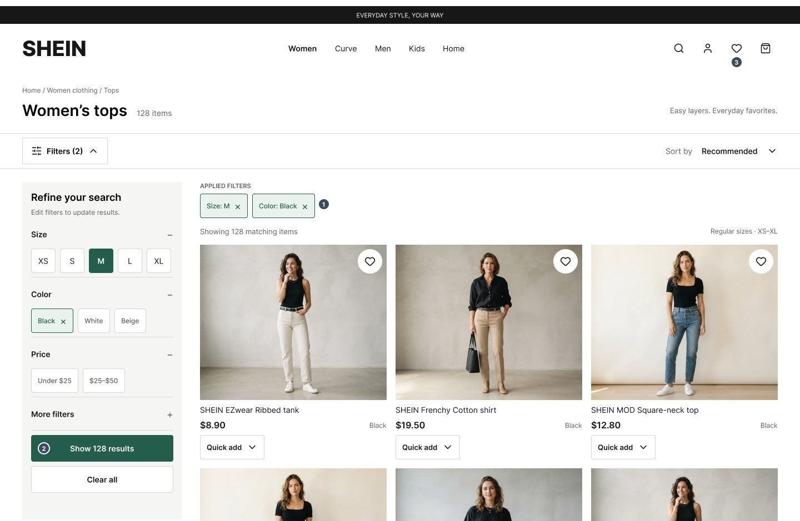
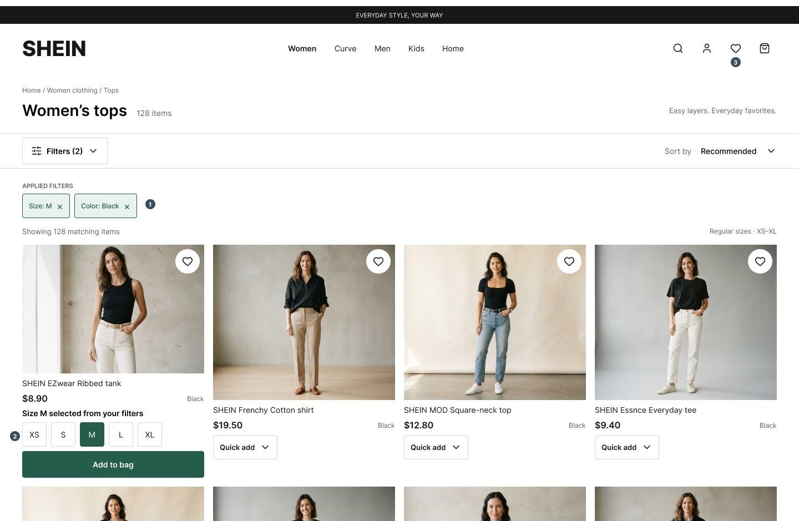
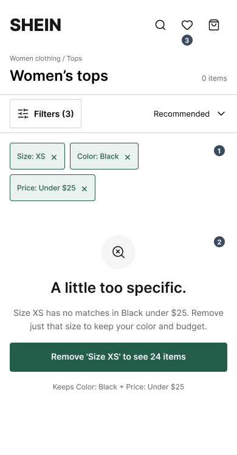
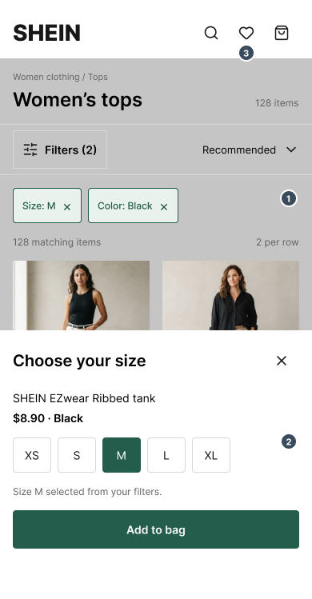
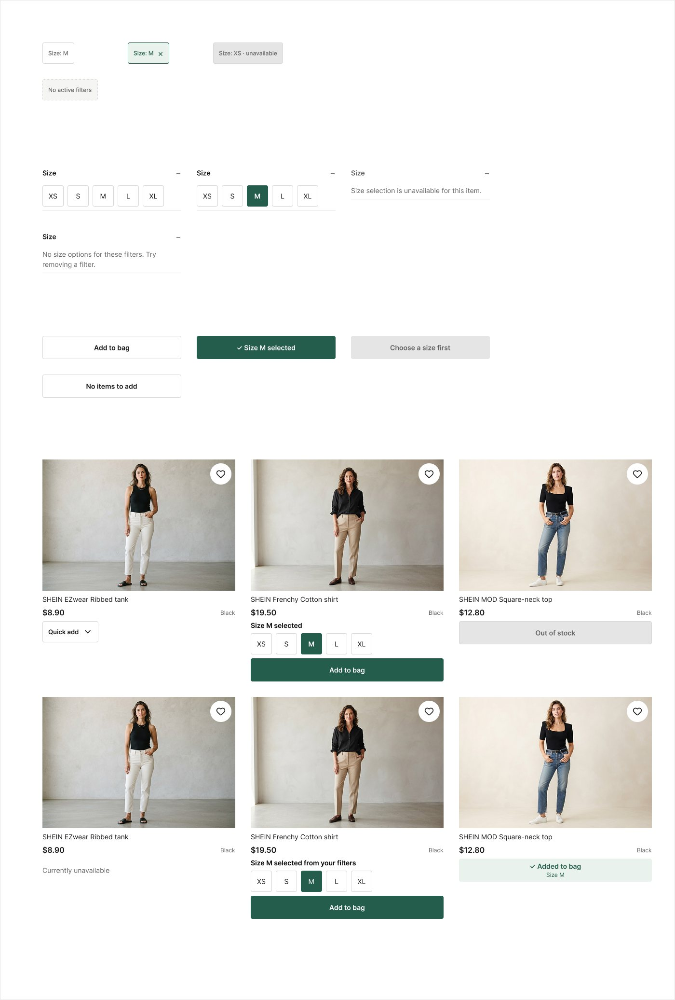

the tension in one glance
Overview
The four-person class team studied whether shoppers could search and filter for a product, add an item directly from a listing, and save one for later. The aim was to compare observed task performance with what participants said about the experience.
Core finding: A formal-study mean SUS score of 81.5 described generally positive perceived usability. But the task records were less positive. Only two of five fully completed the filtering task and three of five fully completed quick add. Favorites reached five of five full completions, with friction for some participants.
Team: Alisha Jordan, Chyna Little, Karena Blue, and Vicky Kimani. The study findings and recommendations are the team's shared work.
My contribution
I moderated usability testing sessions and observed additional sessions led by teammates. I contributed to the collaboratively written report, helped develop the final presentation, and presented its Results & Findings section. For this portfolio, I independently designed the desktop and mobile filter and quick-add concepts shown below.
pass or fail, stated up front
Success criteria
Benchmarks I'm judging against. Set retrospectively for this write-up; the original study defined no pass/fail thresholds.
| Measure | Benchmark | Result | Read |
|---|---|---|---|
| Task completion (each task) | ≥ 80% full completion | Filter 40% · Quick add 60% · Favorites 100% | 2 of 3 tasks miss |
| Perceived usability (SUS) | ≥ 68, the commonly cited average | 81.5 mean (range 32.5–100) | Above benchmark, but the spread is wide |
| Perception vs. behavior | Scores and task outcomes agree | They diverge | The main finding |
Why 80%: a common rule-of-thumb threshold for “usable” task success. With n = 5, each participant is 20 points, so treat the gaps as direction, not proof.
why watch the work happen?
Research questions & method choice
- Could participants find a product and use filters to narrow the results?
- Could they recognize and use quick add without opening a product page?
- Could they save an item to favorites, and what interrupted that path?
- How did task behavior compare with reported ease and overall perceived usability?
Moderated, think-aloud testing let the team observe the route each person took and ask about difficulty after a task. We needed that, because finding a coat by scrolling is different from successfully using filters, and adding from a product page is different from using quick add.
one pilot, then the formal test
Study design
Participants & setting
One pilot participant (P0) and five formal participants (P1–P5) were recruited through personal networks and a social-media volunteer list. Sessions used the SHEIN desktop website with remote screen sharing via Google Meet or Zoom. The report describes prior SHEIN use, but its exact screening rule is inconsistent; see the evidence notes below.
Tasks & measures
Participants thought aloud through search and filtering, quick add, and favorites tasks. The results tables record full, partial, or unsuccessful completion, difficulty ratings, errors, and observations. SUS captured overall perceived usability after the session. Task time and ASQ appear in the plan, but usable summaries are absent from the final results.
The convenience sample, five formal sessions, and prior site experience limit how far these results can be generalized. The study observed the existing interface; it did not test a redesign.
change the task before judging the site
What the pilot changed
The February 17 pilot (P0) exposed a task-script problem: Task 1 needed clearer wording, and Task 2 needed a complete rewrite to prompt the intended quick-add behavior. The team revised those instructions before the five formal sessions.
counts first, scores in context
Formal-study results
These counts are calculated from the report's participant-level results tables for P1–P5. “Partial” stays separate rather than being counted as a full success.
| Task | Full | Partial | Unsuccessful | Reading the result |
|---|---|---|---|---|
| Search & filter | 2 of 5 | 1 of 5 | 2 of 5 | The partial participant found a coat by scrolling without using filters. |
| Quick add | 3 of 5 | 1 of 5 | 1 of 5 | Opening a product page did not demonstrate quick-add use. |
| Save to favorites | 5 of 5 | 0 of 5 | 0 of 5 | Full completion coexisted with icon and sign-in friction. |
Portfolio synthesis from the report's formal-participant tables and observations; this is not an original session artifact.
- Observed route
One participant found a coat by scrolling without using filters. Two others encountered no-result or reset behavior and did not complete the task.
- Interpretation
Finding the product did not demonstrate that filtering worked. The scrolling route therefore remains a partial outcome.
- Proposed test
Reproduce the no-result and reset states, then test persistent selections, clearer labels, and visible result counts.
Perceived usability: the five formal SUS scores listed in the report average 81.5. The report's 82.5 average includes P0. SUS is a usability score, not a percentage or a measure of task completion. The formal scores span 32.5 to 100, so the mean masks substantial variation.
Source: final report, results tables on pp. 7–9; presentation slide 11 corroborates task statuses and SUS scores. These are calculations from the report's tables; original questionnaire responses and session recordings have not been independently verified.
what people did, then what to try
Three findings
01 · Filters interrupted the search path
Observed: P1 and P4 did not complete the task after filters returned no results or reset. P2 found a coat by scrolling but did not use filters, so their outcome is partial. P3 completed the task while noting that filters cost time.
Recommendation: investigate result and reset behavior, then test clearer filter labels, persistent selections, and visible result counts. These changes were proposed, not implemented or validated in this study.
02 · Quick add was easy to miss
Observed: P1 first opened the product page instead of using the listing control. P3 did not use quick add, and P5 partially completed the task. Three of five fully completed it.
Recommendation: test a more prominent, clearly labeled quick-add control on product cards, with visible feedback after activation.
03 · Favorites succeeded, with friction
Observed: all five formal participants completed the task. P1 struggled to find the heart control and encountered an account-creation prompt; P2 corrected an initial mistake.
Recommendation: make the save control easier to identify and clarify the sign-in step before it interrupts saving. Whether guest saving is feasible requires separate product and technical review.
In the participants' words. Post-task answers recorded in the report appendix (the participant isn't identified there).
Filtering: “Simple but difficult cause filter is not working.” Time satisfaction: “disappointed.” Feeling: “Sad, cause you couldn't find the coat.”
Quick add: “Neutral, just ok, also confused with the add to cart icon.”
- 1Unclear active filters → visible, removable chips.
- 2Unexplained zero results → one action: remove XS, see 24 items, keeping color and price.
- 3Favorites preserved (5 of 5 completed in the study).
Independent redesign concept, not an official SHEIN design. Product details and result counts are illustrative, not research outcomes. Not shown to participants.
Open the Figma file: all desktop and mobile states and components ↗
Why this matters (my inference, not a measured result): in a shopping flow, a filter that returns nothing or resets is a dead end. If 2 of 5 shoppers cannot finish filtering, some of them leave without finding a product to buy. The redesign targets that dead end.
Trust design: the empty state is a "support when the system fails" pattern. It names what went wrong, keeps the shopper's other choices, and offers one clear recovery action. The filter chips add visible control: shoppers see and can undo what the system applied.
The redesign, step by step
- Visible filter chips. Applied filters are removable chips above results, so participants can see why the list changed. Responds to: filters that reset or returned nothing with no explanation.
- Explicit Apply and Clear. “Show 128 results” and “Clear all” replace unclear Clear / Done actions.
- A recoverable empty state. It names the one filter to drop and what it restores, keeping the rest.
- Quick add with a size. A size picker pre-selects the filtered size and confirms “Added to bag · Size M.”

Open full size ↗- 1Unclear active filters → visible, removable chips.
- 2Unclear Clear / Done → explicit “Show 128 results” and “Clear all”.
- 3Favorites preserved (5 of 5 completed in the study).

Open full size ↗- 1Unclear active filters → visible, removable chips.
- 2Size carried over from the filters, with confirmation.
- 3Favorites preserved (5 of 5 completed in the study).

Open full size ↗- 1Unclear active filters → visible, removable chips.
- 2Unexplained zero results → remove XS, see 24.
- 3Favorites preserved (5 of 5 completed in the study).

Open full size ↗- 1Unclear active filters → visible, removable chips.
- 2Size carried over from the filters, with confirmation.
- 3Favorites preserved (5 of 5 completed in the study).
Component states used in the redesign

Open full size ↗Moderated think-aloud shows the route, not just the result. Scrolling to a coat and using filters look the same in a survey but not on screen.
Define pass/fail thresholds before testing, and recruit with a stricter screener so new and returning shoppers can be compared.
Public desktop site only, five sessions, and class-project time, so findings are directional and the fix is a proposal.
a portfolio read of the evidence
Prioritized recommendations
Retrospective analysis: this order is a later interpretation of the formal task counts and documented friction, not a ranking recorded in the original report or a claim that any change was shipped.
Fix and retest filtering
Two unsuccessful and one partial outcome make this the clearest task barrier. First reproduce no-result and reset behavior; then test stable filter selections, clearer labels, and result feedback.
Make quick add recognizable
One unsuccessful and one partial outcome, plus a documented detour into the product page, support testing a visible label, stronger contrast, and clearer feedback.
Smooth the favorites path
All five completed it, so this follows the completion barriers. Test icon visibility and explain when sign-in is required. The report also notes disruptive overlays and navigation; capture their frequency in a follow-up study.
how I would know it worked
What I would measure
| Metric | Baseline | Target in a retest |
|---|---|---|
| Filtering task completion | 2 of 5 (40%) | At least 4 of 5 (80%) |
| Participants who recover from a zero-result page | 0 of 2 who hit it | Most recover without restarting |
| Quick add used without opening the product page | 3 of 5 fully completed | At least 4 of 5 |
Targets are mine, set before any retest. With 5 participants a retest shows direction, not proof.
where the evidence stops
What we know & what comes next
Established by this study
The formal task tables show uneven completion across three shopping flows, while the reported SUS scores show generally positive perceived usability with wide variation. Specific filter failures, quick-add detours, and favorites friction are documented.
Still uncertain
Five formal sessions cannot establish prevalence across shoppers. The report suggests familiarity or low prices may explain favorable impressions, but these are hypotheses here. No follow-up study shows that the recommendations improve task success, satisfaction, conversion, or revenue.
Retest plan: prototype the filter and quick-add changes, recruit a mix of new and experienced shoppers, and repeat the same desktop tasks. Record full, partial, and unsuccessful outcomes alongside time, errors, post-task feedback, and SUS so behavior and perception can be compared again.
Success looks like: filtering fully completed by at least 4 of 5 participants (up from 2 of 5), and quick add by at least 4 of 5 (up from 3 of 5), without lowering SUS.
Where recommendations became work: this study did not implement its changes. The same research-to-decision approach did reach a build in my Sigma Gamma Rho navigation redesign, where card-sort and tree-test findings became a coded interface. That project has no post-launch measurement either, so it shows the translation from findings to build, not a measured result.
Research integrity and source notes
- Recruitment: the method section requires prior SHEIN use; the consent appendix allows 0–3 uses, while its screener terminates zero-use respondents. The exact criterion applied to this sample needs confirmation.
- Measures: the plan lists task time and ASQ, and the presentation's method slide labels task success Yes/No even though its results slide includes Partial. The report's results provide no usable time or aggregate ASQ table. This page uses the participant-level Yes/Partial/No statuses and does not infer missing measures.
- Source summaries: the presentation's “3/3 tasks completed” conclusion and the pilot's “all tasks completed” sentence conflict with their task tables. This page follows the tables and separates P0 from P1–P5.
Sources used for this case study: HCI 460 Final Usability Testing Report (primary, March 4, 2026) and 460 SHEIN Final Presentation (supporting, March 9, 2026). No participant names, recordings, or consent materials are reproduced.